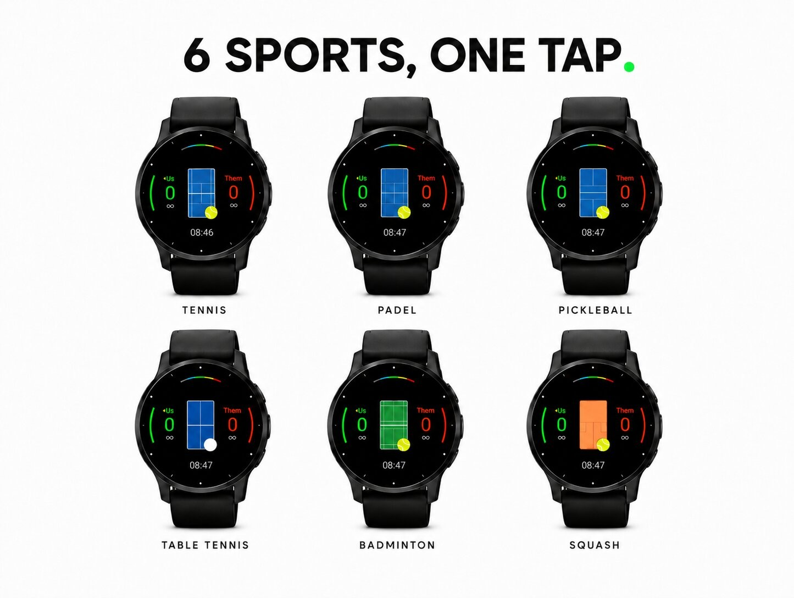
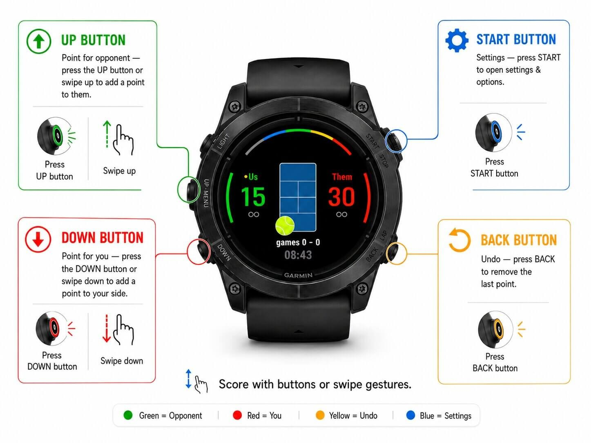
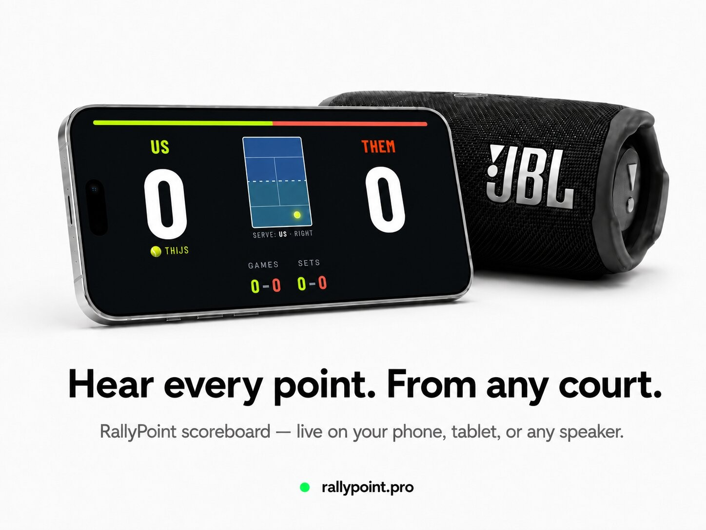
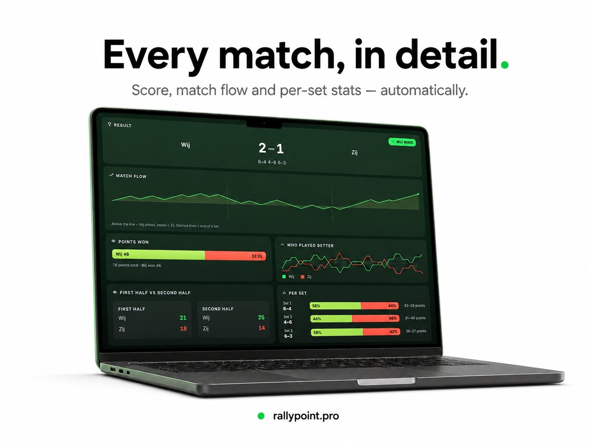

Sport & outdoors · Device app
Score tracker for padel, tennis, pickleball and more.




RallyPoint — Score Tracker & Live Scoreboard for Padel, Tennis, Pickleball, Squash, Badminton & Table Tennis
Stop arguing about the score. One swipe scores the point on your Garmin watch, the live web scoreboard updates instantly on any phone, tablet or TV, and the match saves to Garmin Connect when you're done.
Live scoreboard — rallypoint.pro
Sports
Match formats
Garmin Connect and match stats
Every match saves as a Garmin activity with sport type, heart rate, calories and duration. Garmin Connect stores your workout data, while RallyPoint.pro shows the full match data: set-by-set scoreline, total points, points won, longest streak, points per minute, games, sets, tiebreaks and full set history.
Controls
Languages
English, Nederlands, Deutsch, Español and Français. Change language on the watch mid-match — the live scoreboard and voice readout follow automatically.
No more forgotten scores. No more discussions. Just play.
padel score, padel scoreboard, padel score tracker, padel scoring, padel score keeper, padel score counter, padel live score, padel live scoreboard, padel match tracker, padel tracker, padel app, padel watch app, padel garmin app, garmin padel, garmin padel app, garmin padel tracker, padel tournament scoreboard, padel club scoreboard, padel doubles scoring, padel server rotation, padel golden point, padel tiebreak, premier padel rules, wpt padel rules, tennis score, tennis scoreboard, tennis score tracker, tennis scoring, tennis score keeper, tennis score counter, tennis live score, tennis live scoreboard, tennis match tracker, tennis tracker, tennis app, tennis watch app, tennis garmin app, garmin tennis, garmin tennis app, garmin tennis tracker, tennis doubles scoring, tennis deuce, tennis advantage, tennis tiebreak, atp scoring, pickleball score, pickleball scoreboard, pickleball score tracker, pickleball scoring, pickleball score keeper, pickleball live score, pickleball live scoreboard, pickleball tracker, pickleball app, pickleball watch app, pickleball garmin app, garmin pickleball, pickleball rally scoring, pickleball side out scoring, squash score, squash scoreboard, squash score tracker, squash scoring, squash score keeper, squash tracker, squash app, squash garmin app, garmin squash, badminton score, badminton scoreboard, badminton score tracker, badminton scoring, badminton score keeper, badminton tracker, badminton app, badminton garmin app, garmin badminton, table tennis score, table tennis scoreboard, table tennis score tracker, table tennis scoring, table tennis score keeper, table tennis tracker, table tennis app, table tennis garmin app, ping pong score, ping pong scoreboard, ping pong score tracker, ping pong scoring, ping pong app, ping pong garmin app, garmin scoreboard, garmin score tracker, garmin score keeper, garmin scoring app